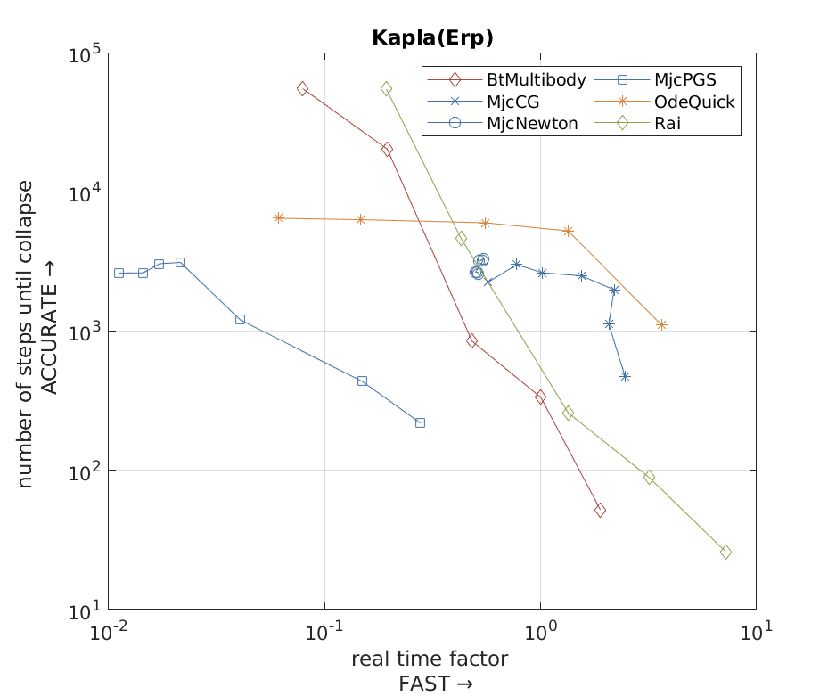
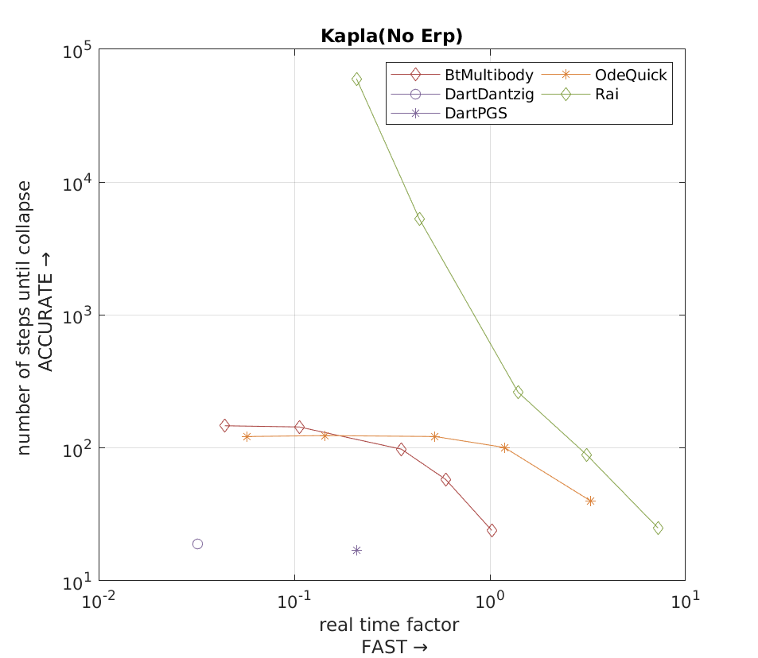

Kapla test

Test scenario
The setup of the test is as follows:
- static ground
- stack of 102 blocks
- Metric: time until the stack collapses
Tested solver list
- Rai
- Bullet
- ODE
- MuJoCo
- Dart
Commentary
-
[1] ODE Dantzig solver is significantly slow with large number of contacts thus was excluded in this test.
-
In this test, we tested both ERP=0 and ERP>0 case, since ODE and Bullet performs very poorly when ERP=0.
Results
We measured the simulation time until collapse and investigated the change over the number of solver iterations.
The following figures are accuracy-speed plot of the result with error correcting algorithm and without error correcting algorithm respectively.

